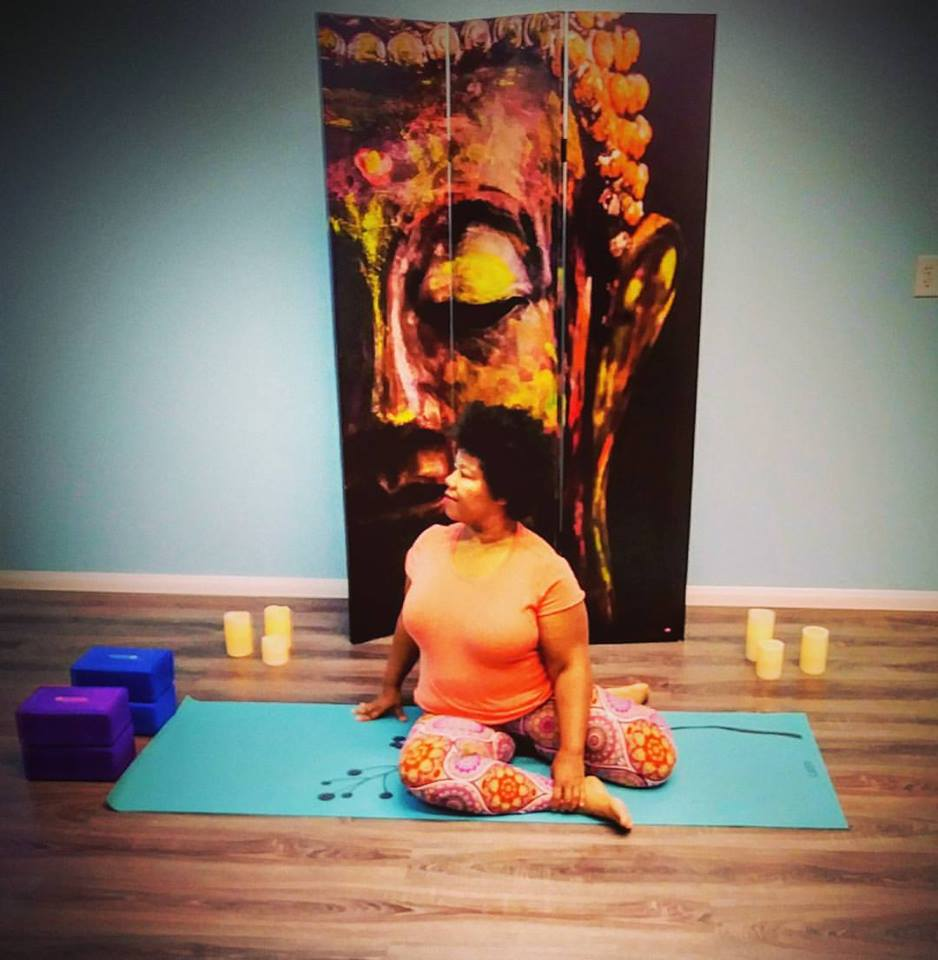

Katricia Kelly
Katricia started practicing yoga many years ago just randomly at the gym, mostly just to loosen up after her workouts. She was into kickboxing and bootcamp classes back then. Anything that would melt the fat off instantly, at least thats what she thought would happen!! It wasn't until Ishe was diagnosed with asthma that she started looking more into a stronger yoga practice. It was almost like her body was calling for it. Bikram was her thing for awhile and then she decided that she needed a more well-rounded practice with a variety of poses that would best suit her body.